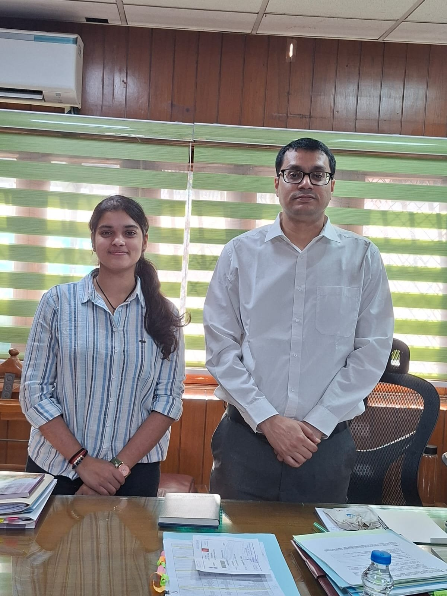
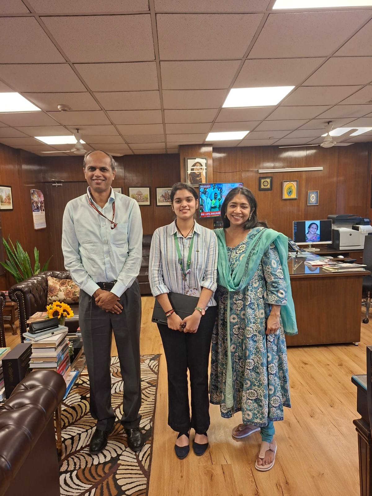
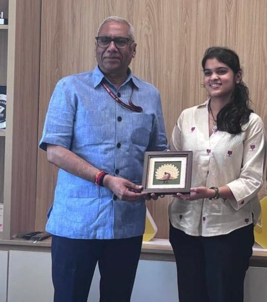
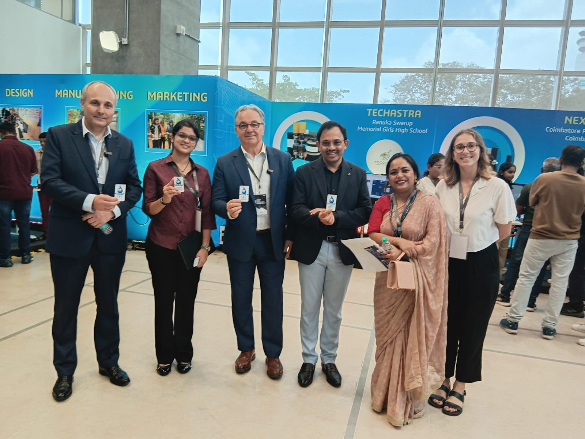

Inspiration
It all began in the summer of 2023, when I was 13. I turned on the tap, and not a single drop came out. From my balcony, I watched tanker after tanker arrive; our society’s borewells had dried up. There were endless discussions about solutions like rainwater harvesting and percolation pits.
But nothing changed.
This isn’t just my story. Bengaluru faces a daily shortage of about 500 million liters of water, and globally, around 4 billion people live under high water stress.
Existing fixes kept stalling for the same three reasons: large infrastructure changes, high cost and complexity, and no one taking ownership. Every solution sat at the society or government level, and nothing reached the individual tap.
Through my macro and micro surveys, I found something interesting: nearly half of household water loss comes from simple misuse, not scarcity.
Objective
Everyone should be able to save water every day, right at their tap. By pairing affordable technology with behavioral change, I want to make responsible water use a flexible, everyday habit that scales from homes to schools, hospitals, and public infrastructure.
System Overview
NIRI is a patented, IoT-enabled mechatronic water conservation system that cuts wastage through intelligent flow regulation, real-time leak detection, automatic shut-off, and behavior-driven nudges. It’s built as a plug-in extension module that retrofits onto any existing tap or pipeline. Inside, a gear system drives a ball valve, rotating it to precise angles for fine-grained flow control. Refined over 6 iterations in 3 years, the device has 5 modes tuned to the highest-consumption points. It pairs with an AI water assistant that tracks consumption and uses the most effective methods to cut usage while maintaining comfort.

Journey
1. Building the Tech
In the ATL lab, every test and piece of feedback reshaped NIRI. I made the power supply self-sufficient with extended battery life for homes without a direct connection, simplified the controls, and rebuilt the blocking mechanism completely, moving from relays and a potentiometer to a servo-driven gear system with a ball valve.


Iteration circuits


2. Deploying and Piloting
The first pilot was my school canteen at Vidyashilp Academy. I was so worried the gears would buckle under pipe pressure that I checked on it every hour, and my teachers were sure something was wrong with me. From there, NIRI moved into hospitals and homes, where each site gave me different feedback.


3. Validation
Mid-demo before 15 government civil engineers, I heard the familiar low rumble of a failing motor, and the demonstration stopped. I asked for a second day, came back, and earned their technical validation for the device achieving up to 30% reduction. Now I carry a spare of every component, which I call my “motor paranoia.”


4. IP
Patent No. 591067, “A Device and System for Conservation of Water”, granted to Aadya Kanchan by the Patent Office, Government of India, on 3 June 2026 (Application No. 202441093699, filed 29 November 2024).

Impact
The dashboard
Every unit reports back to a live dashboard on the NIRI site. These were the figures when I checked on 22 October 2026.
25devices active
30%reduction in consumption
18months active
1,25,338litres of water saved
43.12kg of CO₂ prevented
75.20kWh of energy conserved
That is about $752 off water bills at $0.006 a litre, and enough water for 928 people’s daily use or the daily supply of 464 houses. See the live figures ↗
Government engagement
I earned technical validation from the Rural Drinking Water & Sanitation Department, Government of Karnataka, after presenting to 15 field engineers. I have since presented NIRI to:


Ministry of Jal Shakti. To Mr Prashant Mishra, Special Officer, on approaches to water conservation at the national level.


National Water Mission. To Ms Archana Verma, Additional Secretary and Mission Director, under the Ministry of Jal Shakti.


Atal Innovation Mission, NITI Aayog. To Mr Deepak Bagla, Mission Director, as part of its innovation and sustainability work, with recognition as a student innovator.


Consulate General of France. To Mr Patrick Leverino, Consul General in Mumbai, at the SEP event at Dassault Systèmes, Pune.
Pilot installations
- Sathya Sai Hospital. In the hospital canteen, monitoring and conserving water at high-consumption points.
- Vidyashilp Academy. In my school canteen, tracking consumption patterns and building awareness among students.
- Government school. The school adopted by Vidyashilp Community Trust, where NIRI was presented to students and staff and approved for installation.
Research paper
“Chrono Aqua OSR (NIRI): A Real-Time Mechatronic System for Smart Urban Water Conservation with Customized Control” — a first-author, peer-reviewed paper in the International Journal of High School Research, 2026, Vol. 8 Issue 12, p. 70–80. You can read the full paper here ↗
Collaborations and deployments
Fluxgen Sustainable Technologies, through a Microsoft-funded project at Sathya Sai Hospital and the Blue School initiative backed by Google; Vidyashilp Community Trust, at my school canteen and at the government school my school has adopted; Century Builder, for their ECO Home; and Rossari Group, adopting units for its factories in Gujarat under its CSR programme for FY 2026–27. A pilot at Garuda BHIVE is approved, a deployment with Zerodha Facilities is still in discussion, and NIRI is an incubatee at REVA NEST.
Grant
$7,000 received across national and international competition wins and incubation programmes.
Recognition and outreach


NIRI taught me that even the best technology fails if people don’t adopt it. Solving big problems doesn’t always take grand gestures. Sometimes it takes simple, efficient solutions that create small changes every day.
Videos & resources
Regulation mode
Leak mode
Installation explanation · 0:47–2:27
Research paper
“Chrono Aqua OSR (NIRI): A Real-Time Mechatronic System for Smart Urban Water Conservation with Customized Control”
International Journal of High School Research, 2026, Vol. 8 Issue 12, p. 70–80.